Lap Paths
These paths are for controlling the current lap you are on and the boundaries of the map. They also control where to respawn the player if they fall off the map.
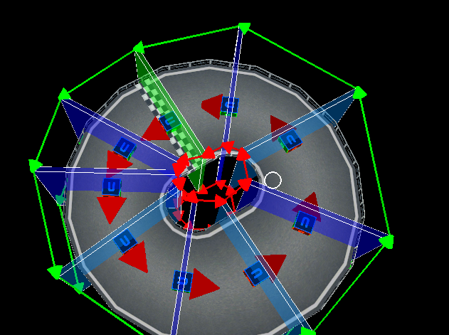
Shortcuts
| Shortcuts | Effect |
|---|---|
| Ctrl + D | Duplicate |
| Alt + Mouse Down | Add points. If one is selected it connects to that. |
| Del | Delete |
| Q | Also can add points. |
| E | Extrude |
| F | Connect/Disconnect 2 selected points |
| 1 | Activates movement tool |
| 2 | Activates rotation tool |
| 3 | Activates scale tool |
| G | Move |
| R | Rotate |
| T | Scale |
| X | Lock X Axis |
| Y | Lock Y Axis |
| Z | Lock Z Axis |
| B | Selection Box |
Creation
To start you want to enter the lap path editor.
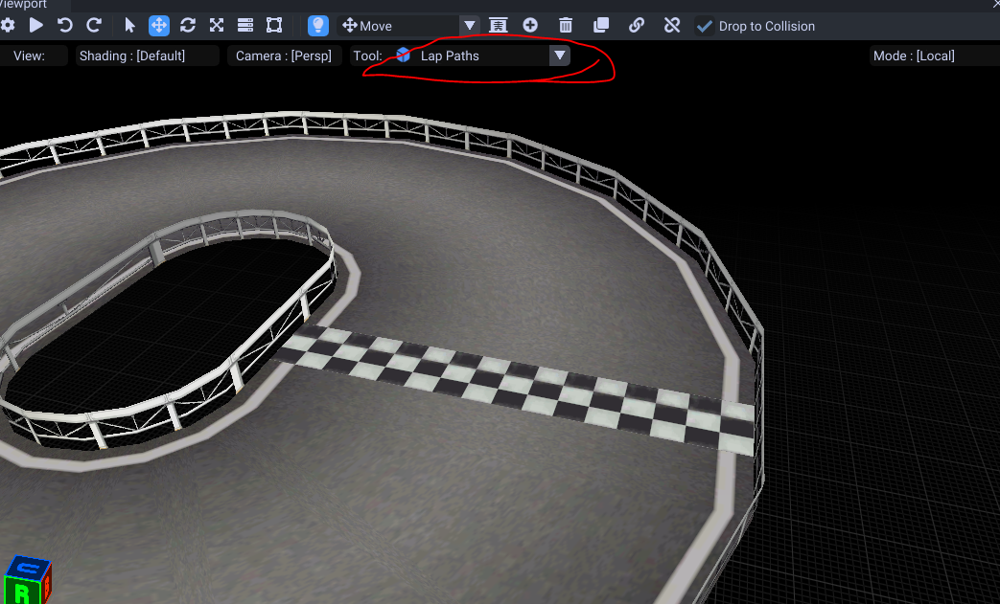
Then Alt + Mouse to create. Start creating where your lap would start at. Ctrl + D to duplicate and keep creating these to fill the entire region you can drive on.
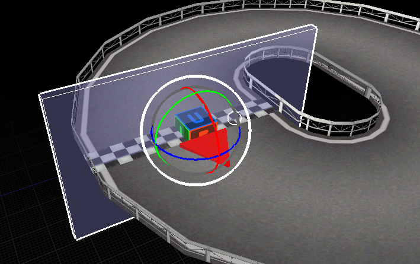
Make sure the arrow is facing towards the direction you drive in by rotating the entire selected lap point object.
I suggest you duplicate (Ctrl + D) then use the translation gizmo to precisly move your lap path.
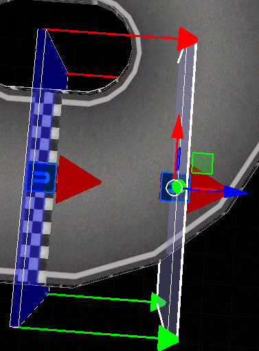
When the road splits, make sure you split your lap paths by selecting the lap point, then creating a new one (do this twice).
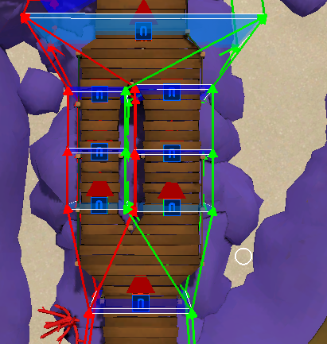
This will ensure if the player falls off, they stay on the correct path.
Keep adding these until your entire drivable region is covered with lap points.
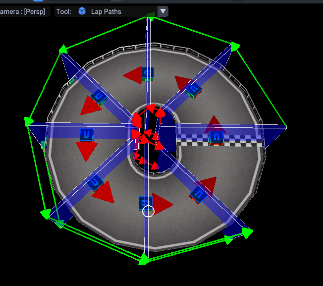
When you need to connect 2 points, first select the point then the other point you want to connect to.
Click on the connect button (or press F)
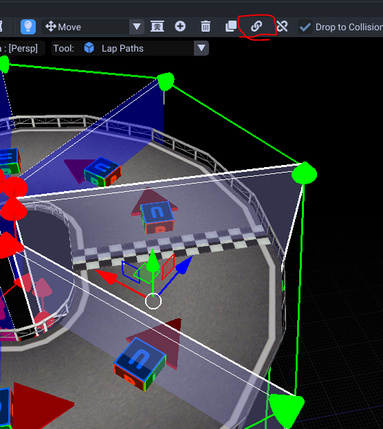
Finishing Up
Next we need to determine what lap path will activate a new lap. We do this from the lap point properties.
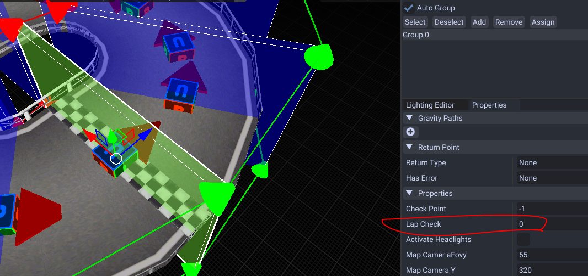
Select your lap path point then make the Lap Check property set to 0. If you want to do a Mount Wario style course where laps increase during the game, increase the value by 1 each lap increase.
If you make a track non looping, set the lap count to 0 in course settings.
Now we need to do one last thing called checkpoints. These determine if you are in the correct place.
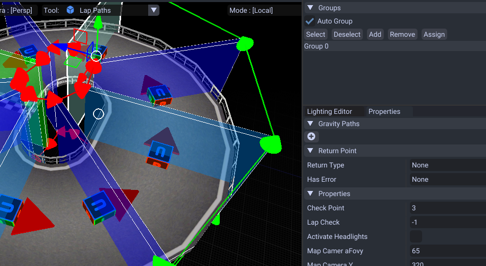
The best way to do these is just increase the amount by 1 every few points starting from the value 1. If you have 2 split possible paths you want to make sure they match.
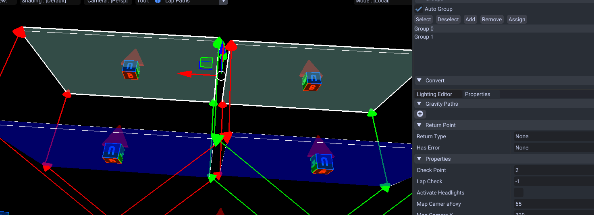
For this example, this is set to 2 for both. Each player needs to be able to pass through the same numbered check points no matter the route they take.
Return Points
Return points are where the player will respawn if they fall within that region. These are marked by these cubes/arrows.
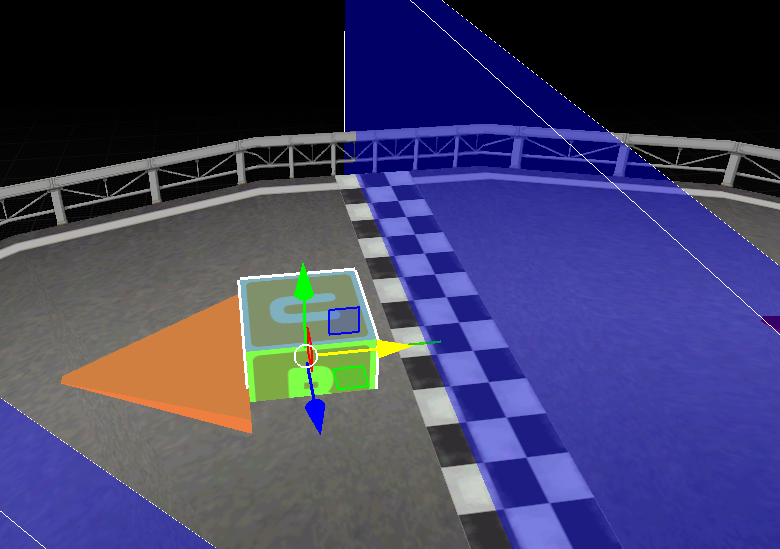
Kart Headlights
Enter a cave and want kart headlights to turn on? You can do this by lap path point properties.
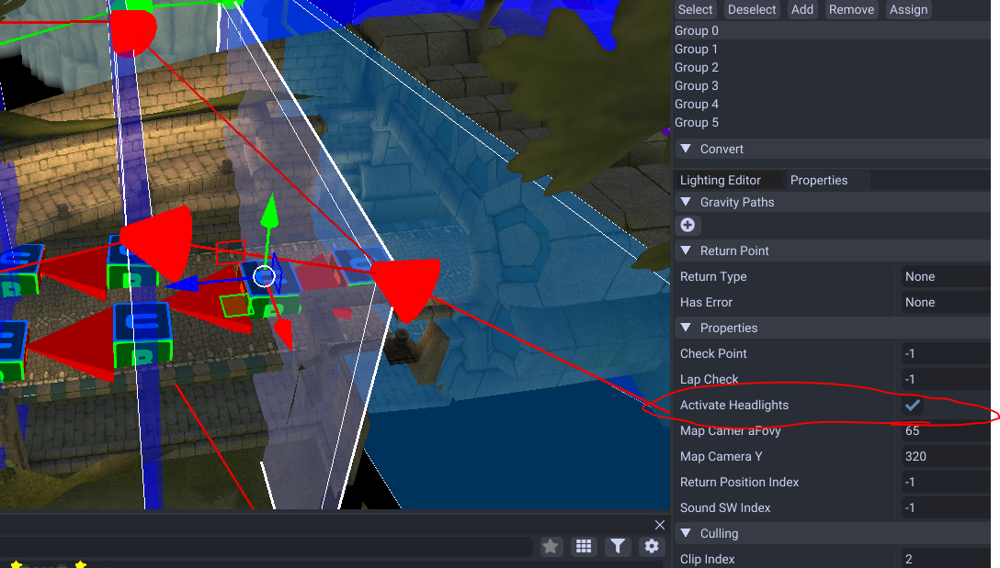
Aslong as the player is inside that region, the kart headlights will stay on.
Then make sure the head lights are enabled in the course settings.
Possible Errors/Mistakes
- Make sure you have enemy paths. The game will crash without them both present!
- If you have a shortcut you may want to split your lap paths! Split lap paths means split return spawn points!
- Make sure you have atleast one lap point with the lap check set to 0.
- Make sure they are fully connected if the course loops.
- If you make a track non looping, set the lap count to 0 in course settings here.